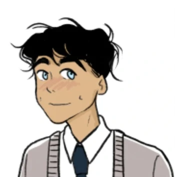

personagens

“Heartstopper” narra o cotidiano de Charlie, um rapaz gay que conhece Nick, um garoto
sensível e praticante de esportes.
Os dois juntos constroem um lindo romance ao longo dos oito episódios da primeira
temporada da história. Tudo começa quando Charlie se senta ao lado do garoto em uma
aula e ele o convida para entrar no time de rugby. A partir daí, eles vão desenvolvendo uma
amizade especial, enquanto Nick começa a questionar sua própria sexualidade ao perceber
que está, pouco a pouco, se apaixonando por Char.
Mesmo gostando muito um do outro e tendo uma química surreal, ambos são bem
diferentes entre si. Então, para comemorar o dia especial do protagonista da trama,
queremos saber: qual dos dois garotos você seria se estivesse no universo de
"Heartstopper"? Será que você também se parece com um Golden Retriever como Nick, ou
é mais tímido e na sua como Charlie? Faça o quiz agora mesmo e compartilhe o seu
resultado com a gente!
Nick Nelson
Nick Nelson é jogador de rugby que nunca havia questionado sua orientação sexual até
conhecer Charlie. Carismático, educado, justo e com uma personalidade - e parte da
aparência - similar a um Golden Retriever (sim, a raça de cachorro), o jovem é cercado por
uma bolha de amigos esportistas heterossexuais e é um dos garotos mais populares da
Truham Boys School. Com Char, ele aprende mais sobre si mesmo e a se posicionar diante
do preconceito cometido contra seu "amigo", sem medo do perigo.
Charlie Spring

Já Charlie Spring é um garoto tímido, muito inteligente, que se dá bem nas matérias da
escola - incluindo matemática - e arrasa nos jogos eletrônicos. Assumidamente gay, o
protagonista de "Heartstopper" teve que lidar com a homofobia no colégio por ser um dos
únicos estudantes assumidamente homossexuais do lugar. Romântico e apaixonado, Char
idealiza bastante suas relações, o que não significa que ele não saiba se impor quando
percebe que precisa se colocar em primeiro lugar e priorizar o seu amor próprio. Seus
melhores amigos são Isaac (Tobie Donovan), Tao Xu (William Gao) e Elle Argent (Yasmin
Finney). O novato no rugby confia muito neles e pode contar com sua turma para qualquer
situação